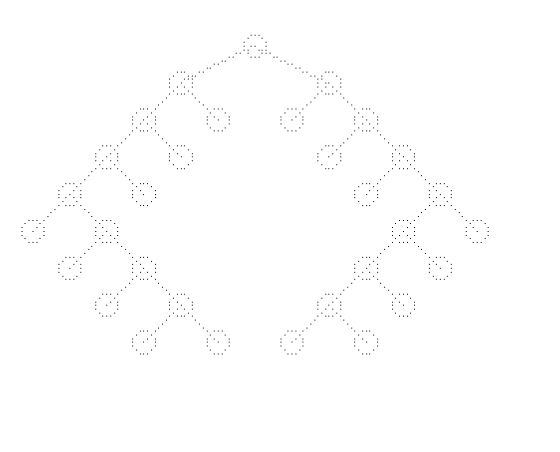

Analysis of both the algorithms and comparison of their performances in terms of output
Paper-1
Tidy Drawings of Trees
CHARLES WETHERELL and ALFRED SHANNON
The algorithm (Algorithm WS) implements following aesthetics while drawing binary trees.
This algorithm doesn't always meet the physical limit.
Fig. 1. Example tree as drawn by Algorithm WS.
As our example illustrates, the difficulty with Algorithm WS is that symmetric trees may be drawn asymmetrically, or more generally, a tree and its reflection will not always produce mirror image drawings; even the same subtree may appear differently in different parts of the tree.
Paper-2
Tidier Drawings of Trees
EDWARD M.REINGOLD and JOHN S. TILFORD
The algorithm (Algorithm TR) implements following aesthetics while drawing binary trees.
We consider Aesthetic 4 to be more important than minimum width since the shape of the printed tree and its reflection ought to be independent of its surroundings to aid in human perception.
Fig. 2. Example tree as drawn by Algorithm TR.